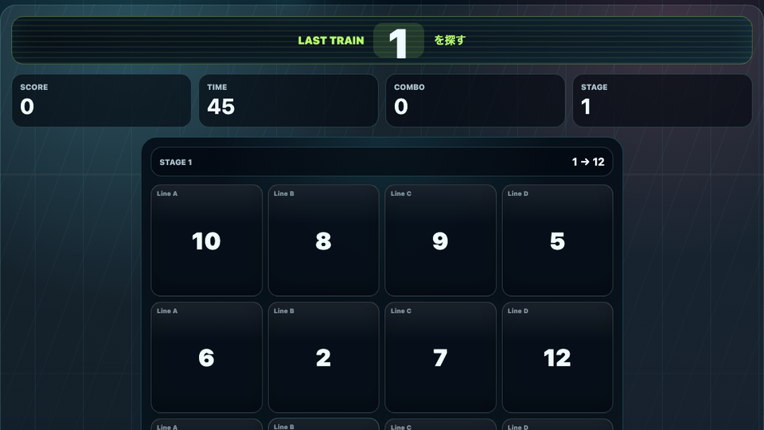

遊び方
- 盤面に散らばった数字の中から、1、2、3の順番で探して押します。
- すべて押せたら次のステージへ進みます。
- ステージが進むと数字が増え、盤面も広がります。
数字タップ / 脳トレ / 無料ブラウザゲーム
終電ナンバーサーチは、駅の発車標に散らばった数字を1から順番に探して押す無料ブラウザ脳トレゲームです。インストール不要で、スマホでもPCでも短時間に判断力と視線移動の速さを試せます。

次に押す数字だけでなく、その次の数字の場所も見ておくとコンボが続きます。左上から右へ視線を流す、または数字を小さなまとまりで探すと安定します。
終電ナンバーサーチは、無料ブラウザゲーム 暇つぶし、数字タップゲーム、脳トレゲーム、反射神経ゲームを探している人向けの短時間ミニゲームです。ルールは簡単ですが、ステージが進むほど視線移動と集中力が必要になります。
数字を見つけた瞬間に次の数字へ視線を移すテンポが気持ちよく、短時間でもスコア更新を狙えます。発車標のような盤面で、急いで終電を確認する世界観にしています。
はい。無料ブラウザゲーム広場では、インストール不要で無料プレイできます。
スマホ・PC対応です。スマホでは数字をタップして遊べます。
短時間で遊べるミニゲーム、数字タップゲーム、脳トレ、反射神経ゲーム、休憩時間の暇つぶしゲームを探している人におすすめです。
終電ナンバーサーチと近い無料ブラウザゲームを、目的や端末別の入口から探せます。